Gauntlet progress
Platform core, judged piece by piece against the owner's bar and Odoo Community. Rebuilt from gauntlet/verdicts/ by gauntlet/tools/record.mjs. Full evidence in ledger.md; owner items in needs-human.md.
Foundation and hard gates
Wave 0 · 6 rounds judgedOurs beats Odoo on sign-in only when the user starts from the team address /?domain=<team domain>. There the screen moves to the password by itself once a whole e-mail in that domain is typed, which saves one step and one key (3/56/18.78 s against 4/57/19.06 s), a thin margin of 0.28 modelled seconds. From the plain address '/', a typed whole e-mail does not move on: the user presses Enter, giving 4 steps / 57 keys, the same as Odoo's e-mail, Tab, password, Enter. A personal bookmark carrying the e-mail is a tie as well: ours /?email=<e-mail> and Odoo /web/login?db=..&login=<e-mail> both pre-fill the e-mail and focus the password, so each takes password then Enter (2 steps, 21 keystrokes). In every start except the team address, ours wins only on machine seconds. To win on every start, the plain sign-in screen needs a path Odoo lacks. Options: move on to the password when the typed e-mail matches a known workspace domain, offer passkey or one-tap sign-in as the first path, or remember the last e-mail on the device even after an explicit sign-out (as a choice the user makes).
- G3 clean clone: ./erp verify (build, migrate, seed, every test) PASS — Fresh clone of bb96d22 in /home/shan/critic/p00-foundation-r7. Command: ERP_PROJECT=c-p00-foundation-r7 ERP_HTTP_PORT=20050 ERP_DB_PORT=20051 ERP_VERIFY_HTTP_PORT=20060 ERP_VERIFY_DB_PORT=20061 verify-slot.sh ./erp verify. The slot was taken at 07:22:10Z and the run ended with 'verify passed in 2522 s' and 'Ratchet check passed' (load 10 to 46 on 16 CPUs). Results: dotnet 453/0 failed, web unit 299/0, e2e 74/0, compare 194/0. Log: verify-critic-p00-r7.log.
- G3 clean clone: ./erp up (running seeded demo) PASS — ERP_PROJECT=c-p00-foundation-r7 ERP_HTTP_PORT=20050 ERP_DB_PORT=20051 ./erp up finished in 66 s wall time and served http://localhost:20050. It seeded alnoor (100,000 users in 42 s) and gulfsteel, and printed the demo sign-ins. Port and project overrides from the environment worked. Log: erp-up.log.
- G1 tenant isolation: critic's live attack (API, exports, files, DB role) PASS — attack/attack.mjs ran as alnoor admin (A) against gulfsteel (B). First B created a canary user, 10 saved and shared views and a company logo. Then A called all 98 non-auth operations with B's ids in path, query and body (98 requests), sent 435 tenant-switch header, query and cookie requests, 100 export requests (csv/xlsx/pdf/json/html, en and ar, with company=B) and 35 filter-language and keyset-cursor requests. Result: 0 responses contained a B canary or any of 208 B-only ids, and 0 got a 2xx on a B id. No audit rows exist in B written by any A user. In the DB, erp_app is NOSUPERUSER, NOBYPASSRLS and NOINHERIT, owns no table and is a member of no role. All 14 tenant tables have tenant_id with RLS enabled and forced. The only non-tenant table, identity.sign_in_secret, is not granted to erp_app. Files: attack/attack-result.txt, db-roles-rls.txt.
- G1 gate catches leaks planted in p00's kernel surface PASS — Plants are in plants/plants.diff, gated by CRITIC_PLANT, built once and run with plants/run-plants.sh. T1, a 30 s process-wide GET micro-cache in Erp.Kernel UnitOfWorkFilter: caught by G1ProcessStateTests (static MicroCache flagged), by G1HttpIsolationTests (5108 leaks, e.g. GET /api/identity/roles answered with a tenant B marker) and by G1NonInterference. T2, a support-workspace cookie erp_ws that runs set_config('app.tenant_id') in UnitOfWorkFilter: caught by G1TenantSettingCodeTests and G1TenantSourceTests, and at runtime by G1HttpIsolationTests (the attack sent cookie erp_ws=<tenant>; the trace reported 'Session settings changed by code other than the kernel's session'). T3, DatabaseSetup granting erp_auth to erp_app with INHERIT: caught by 3 G1DatabaseIsolationTests ('erp_app must not be a member of any role'; it saw other tenants' rows). Logs: plants/plant-T1.log, plant-T2.log, plant-T3.log.
- G2 permissions: deny by default, and the gate catches a planted unchecked action PASS — Plant P1 in Erp.Kernel PermissionAuthorizationHandler let any permission in the same module through. G2PermissionTests.Granting_exactly_one_permission_opens_exactly_the_endpoints_that_declare_it failed on it, e.g. 'identity.profile.update: GET /api/identity/users answered 200 (expected 403)' and 'DELETE /api/identity/roles/{id} answered 404 (expected 403)'. Live check: noaccess@alnoor.example signs in to a shell that shows 'No areas are open to you yet'. Log: plants/plant-P1.log.
- Rule gates (licences, no float money, EN/AR string parity, audit coverage) and the ratchet PASS — These run inside ./erp verify and passed with 'Ratchet check passed'. The DB has no real, double or money columns. Every business table except sign_in_attempts (a log) has an audit_capture trigger. Audit rows carry actor, field-level new and old values and correlation id. erp_app has only SELECT and INSERT on audit.entries. Compared with the r5 commit eab97e5, gauntlet/ratchet.json lowered no minimum, raised no maximum and lost no key.
1020 / 1020 passed
0 failed · 0 skipped · 2522s
Clean clone → demo: PASS in 2522s
| Task | Ours | Odoo | Winner |
|---|---|---|---|
| sign-in (sign in to an empty workspace) | 3 · 56 · 0.406s · 18.78s | 4 · 57 · 1.932s · 19.06s | ours |

Round 7 · judged 2026-10-08T08:21:04Z · commit bb96d2203d
Odoo reference rig and blind comparison harness
Wave 0 · 6 rounds judgedSet-up may act on the product (fixtures). The only guard against set-up doing the task itself is a single verify() call before the clock, and a run counts as 'already done' only when that call returns verified === true. But the driver process calls verify(ctx, undefined) before the clock and verify(ctx, outcome) after it. A driver therefore knows which call it is in. It can answer 'not done' (or throw, which the runner reads as 'not done') before the clock, and read the real end state after it. Nothing requires run() to take any counted step. So the task can be done uncounted through the product's API in set-up: 0 steps, 0 keys, a few milliseconds, and the comparison records a win over any honest path. The lint, the baselines check, the health check and all 315 harness tests stay green. This turns any lost task into a recorded win and makes every ours number untrustworthy until it is closed. Possible fixes: - Give verify() the same arguments before and after the clock, so it cannot tell the calls apart: no outcome at all, or a recorded outcome replayed. - Better, judge the end state with the harness's own reads: snapshot the back-end reads verify() makes before set-up, at the start and after the clock, and require the task's end state to be absent at the start. - Refuse a screen task with zero counted steps. - Record set-up's back-end writes, and refuse a run whose set-up wrote to a resource verify() later reads, other than to restore a start state. - Add P1, P1b and P2 as self-tests. Also close the three mutations the self-tests miss: chord keystrokes (A1), the reference's best path per metric (A16) and a scroll counted as a step (A26).
- Instrument integrity: the harness catches faults planted in the measuring instrument (this piece's surface) FAIL — Stand-in plants in plants/zz-critic-r8.test.mjs (log: plants/critic-r8-plants.log). Both controls hold: the honest path verifies (3 steps, 10 keys), and an honest verify() after a set-up that did the task is refused. Three plants are MISSED. P1: set-up saves the value through the product's API, and verify() answers 'not done' when it gets no outcome, which is how the before-clock call reaches it. run() does nothing. Result: verified, 0 steps, 0 keys, 0.002 s, and compareRuns calls it a 'win' over an honest 3-step path (plants/plant-P1-result.json). P1b is the same with verify() throwing before the clock: verified, 1 step. P2: verified, 0 steps. Real driver: plants/plant-P1-edit-and-save-setup-does-task.diff on ours edit-and-save, run against my demo and private rig, gives 'verified steps 0 keys 0 machine 0.006s' against Odoo's 4/19/0.627 s, verdict WIN. Unplanted, this task is a LOSS (plants/real-driver-plant-P1-edit-and-save-both.log). The whole harness suite stays green with the plant: 315/315 (plants/npm-test-with-real-driver-plant-P1.log), lint and baselines included. My own instrument mutations, run against all 17 non-live test files with a control (plants/critic-mutations-*.log): 27 of 31 caught. Missed, each giving a wrong measurement: A1, a key chord counted as 1 keystroke (Ctrl+S makes edit-and-save 18/18 instead of 19/19, plants/mutation-A1-edit-and-save.log); A16, the reference measured on its worst variant per metric instead of its best; A26, op.scrollTo records no step. Diffs: plants/mutation-A1-*.diff, mutation-A16-*.diff, mutation-A26-*.diff. The harness's own 20 mutations are all caught (verify.log).
- G1 tenant isolation (product as built) PASS — Every G1 gate test passed in ./erp verify (dotnet 484/484). My HTTP attack (attack/http-attack.mjs, attack/http-attack.out) signed in as the alnoor admin and went after gulfsteel. Gulfsteel first created canaries: a user, role, company and branch, plus a private and a shared view on each of 5 lists. The attack then covered all 104 documented operations (attack/openapi-ops.txt) in 8,694 requests. B's ids went into paths, queries, filters, csv/xlsx/pdf export parameters, bodies and 7 tenant-switch headers. Result: 0 leaks, 0 writes on B ids accepted, B's data unchanged. Database (attack/db-attack.txt): all 16 tables with tenant_id have RLS enabled and forced. erp_app, erp_auth and erp_owner are neither superuser nor bypassrls. Unbound, erp_app sees 0 rows. Bound to alnoor it sees only alnoor's rows, an UPDATE of gulfsteel rows touches 0, and an INSERT for gulfsteel violates RLS. With the tenant GUC set but no transaction marker it sees 0 rows.
- G2 permissions (product as built) PASS — Every G2 gate test and the four on-screen permission plant self-tests (identity, tenancy, forms, client isolation) passed in ./erp verify. p01 adds no product endpoint.
- G3 clean clone (one command: build, migrate, seed, all tests; one command: running seeded demo) PASS — Fresh clone at 59e3533, ERP_PROJECT=c-p01-odoo-rig-r8, ports 20150/20151/20160/20161, run through verify-slot.sh. The slot was taken at 22:35:05Z and './erp verify passed in 2906 s' (verify.log). Processor time 8,414 s against a 10,500 s maximum. Built-ours-driver health check: 11/11 verified. './erp up' with ERP_SEED_USERS_CSV returned rc=0 in 77 s, and 58 s on a reset (up-shared-dataset*.log).
- Rule gates (licence, float money, EN/AR strings, audit, OpenAPI, ratchet) PASS — All pass in ./erp verify, and the ratchet check passed. Counts: dotnet 484 (minimum 484), web unit 356 (350), e2e 77 (76), compare 315 (315). None fell below round 6 (429/268/65/193). Harness dependencies: playwright-core 1.56.1 (Apache-2.0) and acorn 8.18.0 (MIT), checked by licences.test.
1232 / 1232 passed
0 failed · 0 skipped · 2906s
Clean clone → demo: PASS in 2906s
| Task | Ours | Odoo | Winner |
|---|---|---|---|
| sign-in (p00) | 3 · 56 · 0.457s · 18.78s | 4 · 57 · 2.636s · 19.06s | ours |
| find-user (p03) | 3 · 15 · 0.566s · 8.6s | 6 · 20 · 1.931s · 14.55s | ours |
| api-update-user (p15) | 2 · 242 · 0.047s · 70.86s | 2 · 184 · 0.464s · 54.62s | odoo |
| switch-to-arabic (p04) | 1 · 0 · 0.133s · 2.65s | 6 · 1 · 3.389s · 15.28s | ours |
| create-restricted-user (named; p03) | 5 · 37 · 0.737s · 20.91s | 10 · 46 · 7.437s · 30.05s | ours |
| reach-screen-keyboard (p04) | 2 · 3 · 0.153s · 3.94s | 3 · 8 · 0.888s · 3.99s | ours |
| create-company-branch (p02) | 6 · 49 · 0.645s · 22.17s | 12 · 72 · 3.016s · 48.53s | ours |
| switch-company (p02) | 1 · 0 · 0.126s · 2.65s | 2 · 0 · 0.72s · 5.3s | ours |
| edit-and-save (p06) | 3 · 19 · 0.185s · 9.72s | 4 · 19 · 0.343s · 10.28s | odoo |
| arabic-report (p06) | 2 · 0 · 0.139s · 5.3s | 6 · 0 · 4.319s · 15.9s | ours |
| print-list-arabic (p06) | 3 · 13 · 0.674s · 11.09s | 5 · 32 · 6.026s · 19.06s | ours |
| find-record, custom-field-filter, import-5000, follow-approval, add-rate, attach-file, configure-sequence, export-filtered-list, keyboard-navigation, see-and-rerun-job, who-changed-field | – | – | not-compared |


Round 8 · judged 2026-10-09T00:32:27Z · commit 59e3533696
Tenants, companies and branches
Wave 1 · 4 rounds judgedThe branch layer is enforced only in the application (the EF branch filter), so every read that selects by company must apply it. The branch attack (CompanyAttack.RunAsync, Layer.Branch) does two things. It sends branch Z's ids and texts into routes, queries and bodies. It also checks company X's shared records for writes. It never makes the branch-limited attacker read company X's own reports, exports and per-user screens with valid company-X parameters (or with none) and then look for branch Z's markers in the answer. Three one-line plants that skip the branch filter passed every G1 and G2 gate, and each is a real leak on a running build. B3: the company profile report (CSV, PDF, JSON) prints every branch of company X with its phone. B3b: a plain GET of the branch directory report lists every branch. B1: GET /api/tenancy/access/{userId} offers every branch's code and name as options. Only the hand-written module test GrantRulesTests noticed B1. This is the same pattern that failed rounds 3 and 4, a branch rule guarded only by module tests. Every later module's 'by company' report, export or job would inherit the blind spot. For a UAE group that limits a warehouse keeper or branch manager to one branch, that means branch-confidential data (other branches' contacts, and later their stock, sales and costs) can leak through any company-level export with no gate turning red. The fix: in the branch layer, also call every GET (reports and list prints included) as the branch-limited attacker with only valid own parameters. That means no parameters, company=X, and the company-X filters in the list contract. Judge each answer against branch Z's markers, the code and names stored when branch Z was created, so the 'values the attacker sent or stored' exclusion cannot hide them. Then plant-test B1, B3 and B3b as gate self-tests.
- G1 tenant isolation: suite and hand attacks on the product as built PASS — Every G1 test passed in ./erp verify (verify.log). Hand attack (attack/attack.mjs, attack/attack.log): signed in as admin@alnoor.example, I sent 48 requests at gulfsteel. They covered GET, PUT and DELETE on B's company, logo and branch, a POST of a branch into B's company, and workplace switches to B's company and branch. They also covered grants of B's company and branch to A's viewer, access to B's admin, list filters and searches on B's ids, and B's codes. Reports and exports were included: companyProfile and branchDirectory with company=B in json, csv, xlsx and pdf, plus list prints. Five tenant or company switch headers and a Host header were tried too. Every request got 404, 400 or an empty list. B's company and branch stayed at version 773 before and after. The one marker 'hit' was my own code GSF-RAK echoed back by a 201 in tenant A (codes are per tenant, so it is no oracle). Database (db-inspection.txt, db-attack.txt): RLS is enabled and forced on all 7 tenancy tables. The company_scope policy is RESTRICTIVE. erp_app is not a superuser and has no BYPASSRLS. As erp_app with no tenant bound it sees 0 companies and 0 tenants. A tenant GUC without the transaction marker sees 0 rows, and so does company_scope=all. An UPDATE on B's company changed 0 rows. DISABLE RLS was refused (not owner), and SET ROLE to erp_owner or postgres was denied.
- G1 tenant layer: planted tenant leaks in this piece (L1 permissive branch policy, L2 workspace-wide company code index) PASS — L1 (plants-batchX.diff) adds a PERMISSIVE SELECT policy USING (is_active) on tenancy.branches. G1DatabaseIsolationTests caught it in 2 tests: Tenant_tables_enforce_row_level_security_with_the_standard_policy and Application_role_sees_and_changes_only_its_own_tenant_in_every_tenant_table (plants-batchX-gates.log). L2 (plants-batchY.diff) changes ix_companies_tenant_id_code to (code) only, an existence oracle across tenants. G1UniqueIndexTests caught it: 'tenancy.companies.ix_companies_tenant_id_code is unique across every tenant' (plants-batchY-gates.log).
- G1 company and branch layer: planted branch-scope leaks in this piece's endpoints and exports (B1, B2, B3, B3b) and round 4's P7 (P2) FAIL — Caught: B2, the switcher GET /api/tenancy/workplace listing every branch, with '178 leaks of branch Z' (plants-batchY-gates.log). Also caught: P2, round 4's P7 again (company update without the every-branch check), by G1BranchScopeAttackTests via the shared-record check: 'refused only by the last layer' (plant-P2-gates.log). Round 4's gap stays fixed. MISSED by every gate: (1) B3 (plants-B1-B3-B3b.diff), where the company profile report reads branches with IgnoreQueryFilters([BranchFilterName]). G1BranchScopeAttackTests, G1HttpIsolationTests, G2ReportDataTests and G1CompanyScopeTests all passed (plants-batchX-gates.log). On a running build with the plant, a user limited to AQZ-WH lists only AQZ-WH, yet /api/reports/run/tenancy.companyProfile?company=<ALN-DXB>&format=csv prints DEIRA-HQ and DIP-SR with their phones (attack/b3-plant.log); the clean demo prints only AQZ-WH (attack/b3-demo.log). (2) B3b, the branch directory report past the branch filter. G1BranchScopeAttackTests passed (plant-B3b-gates.log), and so did G2ReportData and G1HttpIsolation in batch Y. On the planted stack, a plain GET /api/reports/run/tenancy.branchDirectory?format=csv prints all three ALN-DXB branches (attack/b1b3b-plant.log). (3) B1, the access screen's branch options past the branch filter. G1BranchScopeAttackTests passed (plant-B1-gates.log). On the planted stack, GET /api/tenancy/access/{viewer} names DEIRA-HQ 'Deira head office' and DIP-SR. Only the hand-written module test GrantRulesTests.A_branch_limited_administrator_sees_reads_changes_and_gives_only_their_own_branch failed (plants-B1-B3-B3b-tenancy-module.log).
- G2 permissions: planted faults (P1 no permission on PUT /tenant, P3 access change beyond the caller's own branches) PASS — P1 (removing RequirePermission from PUT /api/tenancy/tenant) makes the host refuse to start: 'Endpoint authorisation is incomplete: HTTP: PUT /api/tenancy/tenant => UpdateTenant: declares no permission' (plant-P1-startup.log). P3 makes ChangeWithinCaller unreachable in PUT /api/tenancy/access/{userId}. G2CompanyAccessGrantTests caught it 4 ways, for example 'by an administrator limited to branch 1 of X, giving every branch of X: answered 200, expected 403' (plants-batchX-gates.log).
- G2 screens hide what the user cannot do (tenancy screens) PASS — Round 4's real fault is fixed. A user with the Administrator role limited to ALN-DXB/AQZ-WH gets a read-only company form with no Add branch and no Save. The form explains 'you can read the company but not change it'. The Branches screen offers no New, and the branch Code field is disabled (ui/walk2.log, ui/walk3.log, 07-branch-admin-company-readonly.jpg). The tenancy plant self-test ran in verify. One remaining mismatch is below in other findings: the access panel offers Save for a user whose access goes beyond the caller's branches, and the server refuses it. That comes from the server's canEdit, not from the screen gate.
- G3 clean clone: one command builds, migrates, seeds and passes all tests PASS — Fresh clone at c25bb61. Command: ERP_PROJECT=c-p02-tenancy-r6 ERP_HTTP_PORT=20250 ERP_DB_PORT=20251 ERP_VERIFY_HTTP_PORT=20260 ERP_VERIFY_DB_PORT=20261 ERP_VERIFY_LOG=... gauntlet/tools/verify-slot.sh ./erp verify. The slot was taken at 02:03:30Z after a 7200 s wait, and 'verify passed in 1921 s'. Counts: .NET 435, web unit 275, e2e 65, compare 193, all passed with 0 failed and 0 skipped. The 6 timing-budget tests passed. 'Ratchet check passed.' All 11 built ours drivers verified in the health check, create-company-branch included (6/44), so the p01 r6 critic's intermittent [route: p02] failure did not recur (verify.log).
- G3 clean clone: one command to the running seeded demo PASS — ERP_PROJECT=c-p02-tenancy-r6 ERP_HTTP_PORT=20250 ERP_DB_PORT=20251 ./erp up served the seeded demo in 73 s (up.log). The project and ports can be overridden from the environment, as the README documents.
- Rule gates: licences, decimal money, English/Arabic, audit PASS — The rule gates passed in verify: a string check of 619 keys in English and Arabic, and an accessibility check of 925 JSX elements. Tenancy has no float, numeric or money columns (db-inspection.txt). Audit: every user write to a tenancy table has an audit row with actor_id. Counts were companies 10 inserts and 8 updates, branches 9, tenants 2 updates, user_company_access 22, and user_workplaces 19. Seed rows are marked 'seed'. Operator commands now record the operator in correlation_id: 'operator:critic-r6:tenant-suspend' (tenant-cli.log). Arabic screens are RTL (dir=rtl).
968 / 968 passed
0 failed · 0 skipped · 1921s
Clean clone → demo: PASS in 1921s
| Task | Ours | Odoo | Winner |
|---|---|---|---|
| create-company-branch (create a company with a branch) | 6 · 44 · 0.635s · 22.17s | 12 · 72 · 2.85s · 48.53s | ours |
| switch-company (switch the active company) | 1 · 0 · 0.106s · 2.65s | 2 · 0 · 0.493s · 5.3s | odoo |


Round 6 · judged 2026-10-08T02:36:30Z · commit c25bb61a57
Users, roles and permissions
Wave 1 · 5 rounds judgedThe product now applies the per-company rule correctly: r5's R1 is fixed, and all live and harness checks hold. The gate added for it is half-blind, though. SetTakeover (tests/Erp.Gates.Tests/G2/SetTakeover.cs) gives each caller a workspace-wide role and aims at targets whose roles are held everywhere, in one company, or in a company the caller does not work in. It never builds a caller whose own permissions come from a company role. So UserBulkEndpoints.BeyondCallerAsync's coveredThere ('role/company': the caller's grant counts only in the company where it is held) is never exercised. Planting Pc, which keys coveredThere by role alone, lets a clerk who manages users in the Dubai LLC deactivate and sign out a manager of the JAFZA FZE. That shape is exactly the per-company model UAE groups use, and Pc passed all 484 .NET tests and every gate. On the one-user path the same fault (r5's P1) is caught by G2CompanyRoleTests; the set-based path has no equivalent. Fix: - Extend SetTakeover, and the one-user takeover inventory, with callers whose endpoint permission and target-covering grants are held through a role in company X. They should work in X and Y and be aimed at a user holding the same grants in Y; that user must stay unchanged. - Keep a control: the same grants held in X are changed. - Add Pc as a LeakyModule self-test, like bugs 53 and 54. Also still open, and routed to p00 as in r5: the G1 body attack and write oracle never place tenant B's ids inside arrays of objects. r5's L3, companyRoles[].companyId, is still missed.
- G1 tenant isolation of the product as built PASS — I found no leak. As alnoor's admin I attacked gulfsteel's first 3 users (GET by id, access, sign-ins, default-company, tenancy access, PUT, password, sessions/revoke, unblock, default-company PUT, DELETE) and 3 of its roles (GET, copy, PUT, DELETE). Every call answered 404 or 400, and B's users, roles and admin session were unchanged afterwards. matching/active and the list search with B's e-mails matched 0 (attacks/g1-a-vs-b.txt). Differential checks compared B's ids with random ids in companyRoles[].companyId, companyRoles[].roleId, roleIds[], the access companies[] and a role filter, and all answered the same. The two 'DIFFERENT' lines in that file are not leaks. The e-mail line differs only in its random set-up code. The role-name line used 'Staff', which tenant A also has: a role name only B holds answered 201 for A, as an unused name does (attacks/g1-rolename-followup.txt). As erp_app with no tenant bound I saw 0 rows. Bound to A, I saw 100,017 of A's users and 0 of other tenants', UPDATE 0, and an INSERT into B's user_roles was refused by RLS. DISABLE RLS, SET ROLE erp_owner and row_security=off were all refused. No role has bypassrls (attacks/db-app-role.txt).
- G1 gate catches tenant leaks planted in this piece's surface FAIL — Plants are in plants/r6-plants.diff (scripts apply-L3-r5.py and apply-r6-plants.py). The run went through verify-slot (plants/run1/gates.log, identity.log). - L4 (new): a disk registry of every e-mail any workspace lists or creates, so POST /api/identity/users answers 409 identity.emailTaken for another workspace's address. CAUGHT by G1WriteOracleTests: 'tenant A sending a value written by tenant B ... answered 409, a value that exists nowhere answered 201'. - L3 (r5's plant, re-applied unchanged): companyRoles[].companyId answers identityNotTheirCompany for tenant B's company and unknownIds for an id that exists nowhere. MISSED AGAIN: no gate failure mentions companyRoles or identityNotTheirCompany. G1WriteOracle still judges only top-level text fields (e-mail, code, name), never uuid fields inside arrays of objects. G1HttpIsolation failed in this run only on side effects of L4 (B's own creates got 409, so 'B's writes must succeed' and the write-after-write ratchet counts tripped). r5 recorded this miss as a gate failure, and nothing in G1 has changed since, so the row stays failed.
- G2 permissions of the product as built (restricted roles, escalation, screens hide) PASS — r5's R1 is fixed live (attacks/g2-bulk.txt). The Helpdesk clerk's matching/active against a company manager answered {matched:1, changed:0, refusedBeyondOwn:1} by search and by filter. The manager stayed active and their session stayed live. Two further cases were refused: a user with a weak role in a company the clerk does not work in, and a target holding grants in C2 when the caller held them only in C1. Controls behaved as they should: a roleless user and a C1 holder of the same role were changed. Escalation probes were all refused (attacks/g2-escalation.txt): - adding a company role to oneself; - adding oneself to a company; - a company manager changing the Administrator's access (403 tenancy.userBeyondOwn); - granting a company role in a company where the caller does not hold it; - granting a role workspace-wide (403 grantBeyondOwn); - editing or stripping roles whose grants the caller holds only in one company (403 roleBeyondOwn). On screen, a clerk without identity.roles.read who opens the Administrator now gets 'Read only', 0 editable inputs and no Save or 'Sign out everywhere'. A plain user still offers Save (browser-walk-1-clerk.txt, screenshot 01). This fixes r5's screen finding.
- G2 gate catches permission faults planted in this piece's surface FAIL — Three faults were planted in one run (plants/run1). - Pa: 'all that match' stops refusing users with roles in companies the caller does not work in. CAUGHT by G2AccountTakeoverTests/SetTakeover ('aimed at a user holding a role in a company the caller does not work in ... answered 200 and changed them'). - Pd: POST /users/{id}/unblock guarded by identity.users.read. CAUGHT by both G2PermissionTests. - Pc: 'all that match' lets a permission the caller holds in ONE company cover the same role held in ANY company; in code, coveredThere keyed by role instead of role/company. MISSED by every gate and every module test. CompanyRolesTests' bulk test failed only because Pa removed the hidden-role check; with the caller working only in X, Pc alone cannot reach Y's rows. My proof plants/CriticR6Proof.cs Pc_... caught it: a clerk whose users.update and tenancy.companies.update come from a role in company 1 deactivated a user holding those grants in company 2. The proof passes on the shipped product (plants/unplanted-proofs/proofs.log) and fails planted (plants/run1/identity.log). SetTakeover gives every caller only workspace-wide roles. Its caller never holds grants through a company role, so the company half of the coverage rule goes untested on the set-based path. r5's P1, the same fault on the one-user path, is covered by G2CompanyRoleTests.
- G3 clean clone: one command builds, migrates, seeds, tests PASS — Fresh clone of 462c349 with ERP_PROJECT=c-p03-identity-r6 and ports 20350/20351/20360/20361 (all honoured), run through verify-slot. - Run 1 (slot taken 19:40:44Z, load 39 to 105): 1,103/1,103 tests passed, but verify FAILED on the ratchet: 'verify.cpuSeconds: the verify stages used 10345 processor seconds, maximum 9000' (verify-critic-p03-identity-r6.log). - Run 2 is void, my own fault. I had left a critic Odoo find-user driver in my clone, and baselines.test.mjs correctly flagged the changed driver (verify2-critic-p03-identity-r6.log). - Run 3 on the restored clone (slot taken 23:23:38Z, load 8 to 16): 'verify passed in 2836 s', processor time 7,900 s, ratchet check passed. Counts: dotnet 484, web 350, e2e 75, compare 194 (verify3-critic-p03-identity-r6.log).
- G3 clean clone: one command to a running seeded demo PASS — ./erp up with ERP_SEED_USERS_CSV served the demo on port 20350 in 112 s, with 100,017 users in alnoor (up.log).
- Rule gates (licences, money, strings, audit) and ratchet counts PASS — Passed inside verify run 3. The string check found 657 keys in both English and Arabic. No count fell: total tests rose from 1,053 in r5 to 1,103. Each bulk change is audited with the actor and old and new values, for example 'clerk.64eabe ... users update {is_active: true->false}'. Audit rows exist for users, user_credentials, roles, user_roles, user_company_roles and sessions (attacks/audit-sample.txt).
1103 / 1103 passed
0 failed · 0 skipped · 2836s
Clean clone → demo: PASS in 2836s
| Task | Ours | Odoo | Winner |
|---|---|---|---|
| create-restricted-user (named) | 5 · 37 · 1.447s · 20.91s | 10 · 46 · 12.555s · 30.05s | ours |
| find-user (find one user among 100,000) | 3 · 8 · 0.657s · 6.64s | 6 · 9 · 3.104s · 11.19s | ours |

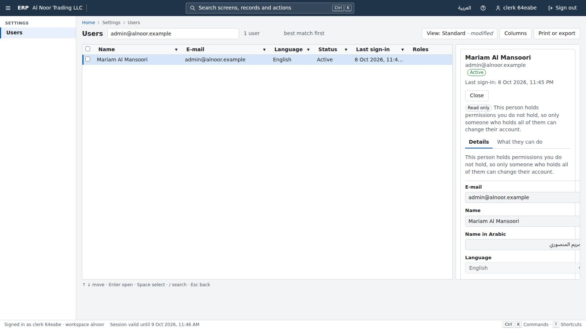

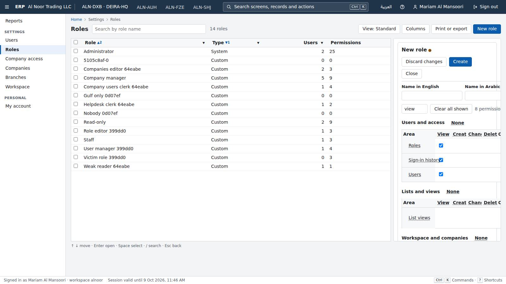

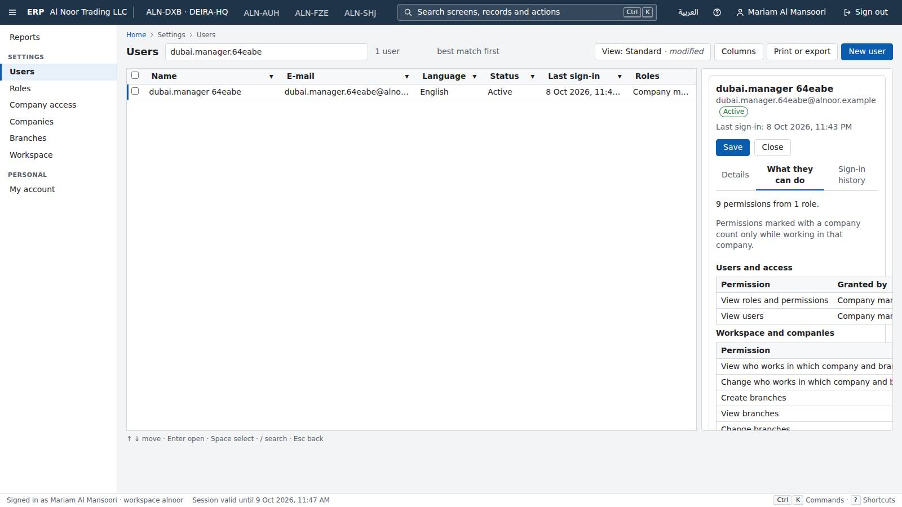

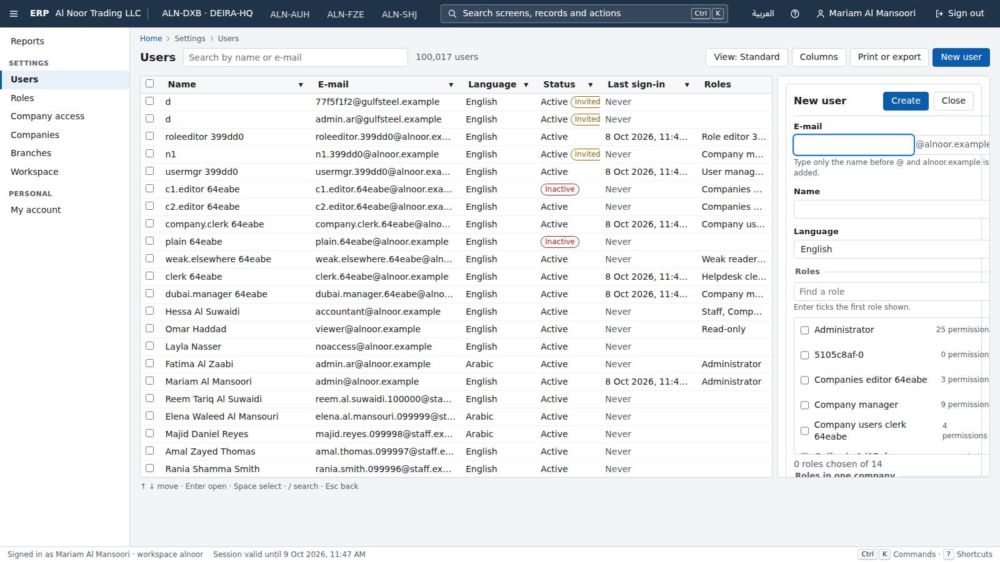

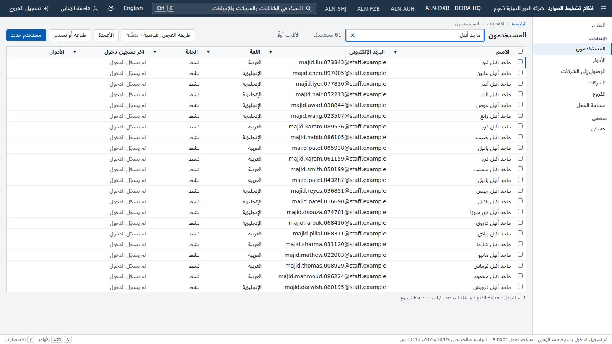

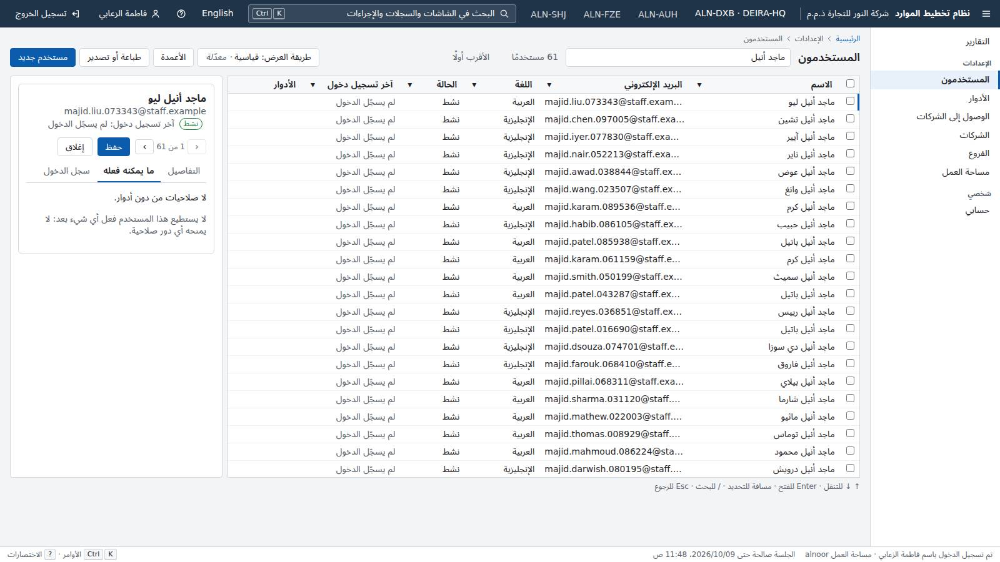

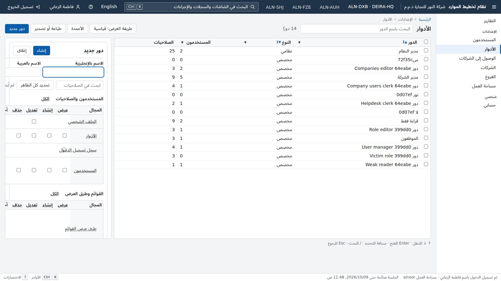

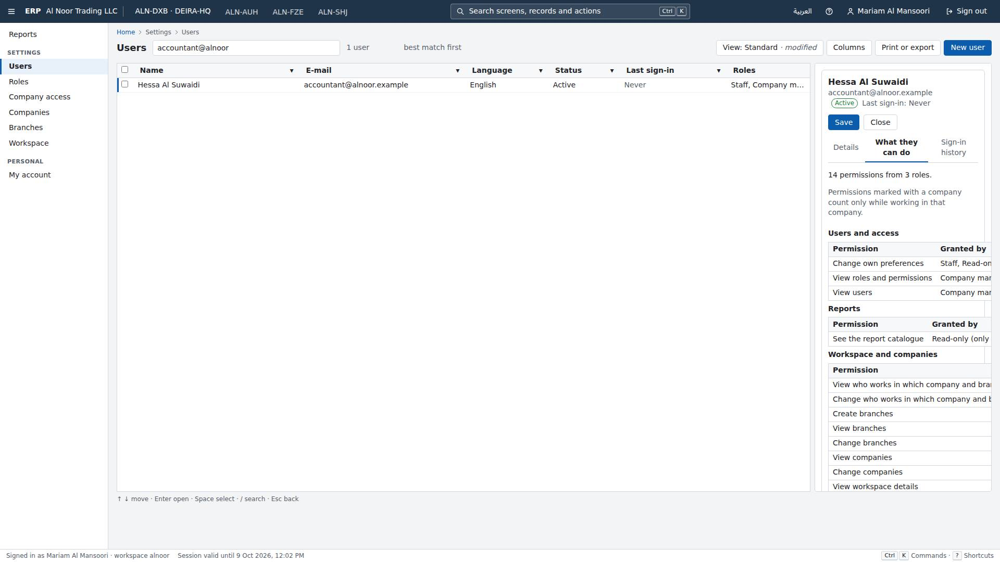
Round 6 · judged 2026-10-09T00:11:38Z · commit 462c349da3
English/Arabic app shell
Wave 1 · 4 rounds judgedG1's write-after-write and non-interference phases build every write body from the first documented enum value. TenantActivity.OwnLeaf hard-codes language 'en' and numerals 'latn', and OpenApiDocument.BuildBody(useDocumentedValues) returns enum[0]. So no tenant pair ever sends language 'ar' or numerals 'arab', and the code paths behind them are never attacked. Those are this piece's own features and half of the UAE market's users. Any state that leaks between tenants only on the Arabic path (a cache keyed by language, a per-locale formatter memo, a shared file or a header set only for Arabic) ships unseen. Fix (gate machinery in TenantActivity/OpenApiDocument, owned with p00): for every write endpoint, run the tenant-B-then-tenant-A write pairs and the non-interference comparison once per allowed value of every enum or AllowedTextValues field (at least every value of language and numerals), with B and A using the same value. Add 'g1.enumValuesAttacked' to the ratchet, and keep plant L1 as a gate self-test.
- G3 clean clone: one command builds, migrates, seeds and passes all tests FAIL — verify.log: ERP_PROJECT=c-p04-shell-r4 ... verify-slot.sh ./erp verify exited 1 ('verify stages failed: e2e'). The .NET stage passed (370/370) and so did web (192 unit, 146 harness). End-to-end passed 62/62. Then the stage's built-drivers health check failed: 'sign-in ours error ... (returning: error locator.waitFor: Timeout 120000ms exceeded.)'. Because of that, the timing budgets (stage 2/3) and the ratchet check (stage 3/3) never ran. I re-ran the same e2e+health sequence on a fresh stack (e2e-fresh-stack.log) and the sign-in task alone 11 more times (signin-repro, signin-repeat), and all passed, so the failure is intermittent. verify_cleanup deleted the failing run's result JSON, so its cause cannot be read.
- G3 one command to a running seeded demo PASS — ERP_PROJECT=c-p04-shell-r4 ERP_HTTP_PORT=20450 ERP_DB_PORT=20451 ./erp up served the seeded demo (100,009 users) in 114 s (up.log). Port and project overrides work.
- G1 tenant isolation of the product (my own attacks) PASS — attack-http.txt: as alnoor, B's user id gave 404, and a preferences PUT with B's userId/tenantId changed only A. A workplace PUT with B's company gave 400, B's company report 404, a CSV export searching 'gulfsteel' came back empty, and tenant headers were ignored. attack-db-app-role.txt: as erp_app, 0 rows with no tenant set, 0 of B's rows with A's tenant set, and UPDATE of B's rows gave UPDATE 0. Disabling RLS, SET ROLE and reading sign_in_secret were all refused. history-leak-recheck.txt: r3's one-tab Back leak is gone. No jobs or stored files exist yet.
- G1 gate catches a tenant leak planted in this piece's surface FAIL — Plant L1 (plant-L1-arabic-digits-leak.diff): PUT /api/identity/me/preferences keeps the last Arabic-Indic-digits caller's e-mail in a temp file and appends it to the next such caller's displayName. Gate run (plants-L1-N1-gates.log): G1HttpIsolationTests.Tenant_A_cannot_reach_tenant_B_through_any_endpoint PASSED (13 m 17 s), and so did G1NonInterferenceTests, G1ProcessStateTests and G1TenantSourceTests. Live on the planted build (plant-L1-live-demo.txt): admin@gulfsteel PUT {numerals:arab}, then admin@alnoor PUT {numerals:arab} returned displayName 'Mariam Al Mansoori (also using these digits: admin@gulfsteel.example)'.
- G1 client-state gate catches a planted client leak PASS — Plant C3 (plant-C3-palette-last-in-device-key.diff): the palette writes the last opened record into a new device key 'erp.paletteLast' that survives sign-out. clientIsolation.test.tsx failed with 'after B signed out: expected [gulfsteel, Zx81] to deeply equal []' (plants-web-vitest-fails.txt).
- G2 permissions on this piece's surface PASS — P3 (DELETE /api/identity/me/preferences with no permission): the host refused to start ('declares no permission') and all 114 gate tests failed (plant-P3-gates.log). N1 re-plant (preferences of another user named in the body): caught by G2SubjectTests ('named another user of the tenant and that user's rows in identity.users changed'). P2 (AppShell renders every route whatever the roles): caught by 3 vitest tests (offers only granted screens; users and roles toolbars).
- Rule gates (licences, strings EN/AR, accessibility, no float money, audit) PASS — Passed inside verify's web and .NET stages: the string gate, the accessibility check (917 JSX elements) and the rule tests in Erp.Gates.Tests (114/114). The N1 run shows a preferences change writes audit.entries.
779 / 780 passed
1 failed · 0 skipped · 2625s
Clean clone → demo: FAIL in 2625s
| Task | Ours | Odoo | Winner |
|---|---|---|---|
| switch-to-arabic | 1 · 0 · 0.109s · 2.65s | 6 · 1 · 2.591s · 15.28s | ours |
| reach-screen-keyboard | 2 · 3 · 0.138s · 3.15s | 3 · 8 · 0.953s · 3.99s | ours |
| open-third-user-keyboard (critic-added in r2, kept) | 6 · 7 · 0.212s · 6.41s | 8 · 13 · 1.29s · 6.74s | ours |
| keyboard-navigation (open the third contact by keyboard) | – | 9 · 10 · 1.2s · 7.25s | not-compared |


Round 4 · judged 2026-10-07T00:00:32Z · commit 3b3b0b6a53
List and search framework
Wave 1 · 4 rounds judgedEvery later module registers its lists with p05 and relies on G1 to attack them automatically. The list contract has five query inputs: search, filter, sort, paging and grouping. ListAnswers, the only gate that judges what a total adds up to, sends search, filter and groupBy but never sort. Every header click in the client sends sort. HttpIsolation and ListContract send sort, but never with a search and never judging the total. NonInterference cannot see static state by design and leaves it to the process-state gate. That gate's IsGenerated skips any type whose name contains '<'. That includes every C# `file`-local class, which is an ordinary language feature, so the statics of such a class are neither inspected nor walked. Plant L11 combines the two: a `file static class` in ListBinding.cs keeps a ConcurrentDictionary of totals keyed by list|search|filter|sort with no tenant. Fixes: (a) in ListAnswers (and NonInterference's list requests), walk every query also with each sortable column in both directions, alone and combined with the searches and filters already used, and judge the total and groups of every page; (b) in ProcessState/ReachableState, treat as generated only types with [CompilerGenerated] or [GeneratedCode] whose names match closure, display-class or state-machine patterns, and inspect C# file-local types (<File>F…__Name) like any other type; (c) add a tenant-source or process-state rule for static mutable collections (ConcurrentDictionary, Dictionary and the like) in any product type.
- G1 tenant isolation (product as built) PASS — Gate suite green inside verify. My own attacks as admin@gulfsteel against alnoor's 100,005 users found 0 leaks in 27 probes (attack-api.txt). I tried: needle e-mail, name and Arabic name searches; an e-mail eq filter; an OR filter; quote injection; % and _ wildcards; X-Tenant, X-Tenant-Id and X-Workspace headers; tenantId, tenant and workspace query parameters; groupBy with the needle; skip=99000; alnoor's keyset cursor replayed; alnoor's user id; GET/PUT/DELETE of alnoor's shared view through both the shared and the personal routes (all 404, and the view stayed); the views list and the definition; CSV/XLSX/PDF list prints; and the bulk matching/active as a count oracle (409 with gulfsteel's own count only). Alnoor's needle stayed active. Control on the real product (control-L11-real-product.txt): sorted searches give each tenant its own total. Database (db-inspect.txt): lists.saved_views has RLS enabled and forced with tenant_isolation. erp_owner, erp_app and erp_auth have neither superuser nor BYPASSRLS. Unbound, erp_app sees 0 users and 0 views. Bound to gulfsteel, it sees 0 alnoor users and 0 views, and an UPDATE of alnoor's views touches 0 rows.
- G1 catches tenant leaks planted in p05's surface FAIL — Plant L11 (plants/L11-file-local-static-sorted-search-total.patch, 13 lines in ListBinding.cs) is a C# file-local class (`file static class SortedSearchTotals`) holding a static ConcurrentDictionary<string,int>. A request with both an explicit sort and a search reuses the total first counted for list|search|filter|sort, whatever the tenant. All 53 G1 tests PASSED with it (plants/run-L11-g1-all.log, 32 min), including ProcessState, TenantSource, NonInterference, HttpIsolation/ListAnswers and WriteOracle. Live on a plant stack (plants/plant-live-L11.txt): gulfsteel's GET /api/identity/users?search=khalid&sort=displayName answers total 52, which is alnoor's count; gulfsteel has 28 rows and the same query without sort says 28. The same happens for search=a (2005 vs 1005) and search=a with filter language eq 'ar' (421 vs 203). The users screen shows it: sort by Name, type 'khalid', and gulfsteel sees '52 users' (plants/plant-L11-gulfsteel-sorted-search-shows-other-tenant-total.jpg). Blind spots: (1) ListAnswers never sends sort=. Its queries are search, filter and groupBy only, while the client sends sort whenever a user clicks a header. HttpIsolation and ListContract send sort without a search, and NonInterference cannot see statics by design. (2) ProcessState.IsGenerated skips every type whose metadata name contains '<'. That includes every C# `file`-local type (compiled as <File>F…__Name), so the statics of a file-local class are never roots and never inspected.
- G2 permissions (product as built) PASS — Gate suite green. Live control (control-P6-real-product.txt): the viewer has canShare false and gets 403 on PUT /shared-views/{id}. The viewer saving a personal default leaves the workspace's shared default as it was (isDefault true, version unchanged). The bulk 'all that match' confirmation is the app's own dialog, in Arabic for an Arabic user (10-bulk-confirm-ar.jpg). Cancelling changed nothing (0 inactive users afterwards).
- G2 catches unpermissioned actions planted in p05's surface FAIL — Plant P6 (plants/P6-personal-default-clears-shared-default.patch, one line in ViewEndpoints.ClearOtherDefaultsAsync): saving a personal view as default also clears the workspace's shared default. All 36 G2 tests PASSED (plants/run-P6-g2-all.log). Live (plants/plant-live-P6.txt): viewer@alnoor does not hold lists.views.share and gets 403 on PUT /shared-views/{id}. The same viewer POSTs a personal view with isDefault:true, and the administrator's shared default view becomes isDefault false (version 892 to 894), which changes the opening view for the whole workspace. The G2 list test never sends isDefault and never has a shared view that is default, so it is blind to this. Gate that held: plant P7 (GET /views lists every user's personal views) made G2 fail (plants/run-P6-P7-g2-all.log), but only incidentally: the administrator's before/after snapshot gained the sharer's view. The message calls it 'views changed while refused callers tried them'.
- G3 clean clone PASS — I cloned f1ce287 fresh and ran ERP_PROJECT=c-p05-list-search-r7 ERP_HTTP_PORT=20550 ERP_DB_PORT=20551 ERP_VERIFY_HTTP_PORT=20560 ERP_VERIFY_DB_PORT=20561 through verify-slot.sh ./erp verify. It passed in 3121 s from 'slot taken' (23:53:56Z, no wait), with processor time 7250 s (maximum 10500), and the ratchet check passed (verify-critic-p05-list-search-r7.log). ./erp up with ERP_SEED_USERS_CSV served the seeded demo with 100,005 alnoor users in 49 s (up-critic-p05-list-search-r7.log). The port and project overrides worked.
- Rule gates (licence, money, strings, audit, list index) PASS — Green inside verify. The users list has a GIN gin_trgm_ops index on display_name and email_normalized, one on display_name_ar, and (tenant_id, column, id) indexes per sortable column (db-inspect.txt). The definition carries currency fields for money columns, and ListAnswers judges moneyTotals per currency.
1262 / 1262 passed
0 failed · 0 skipped · 3121s
Clean clone → demo: PASS in 3121s
| Task | Ours | Odoo | Winner |
|---|---|---|---|
| find-user (find one user among 100,000; p16 contacts not built, so the dataset's 100,000 users) | 3 · 4 · 1.08s · 8.57s | 6 · 5 · 1.21s · 14.55s | ours |
| find-record (find one contact among 100,000) | – | – | not-compared |

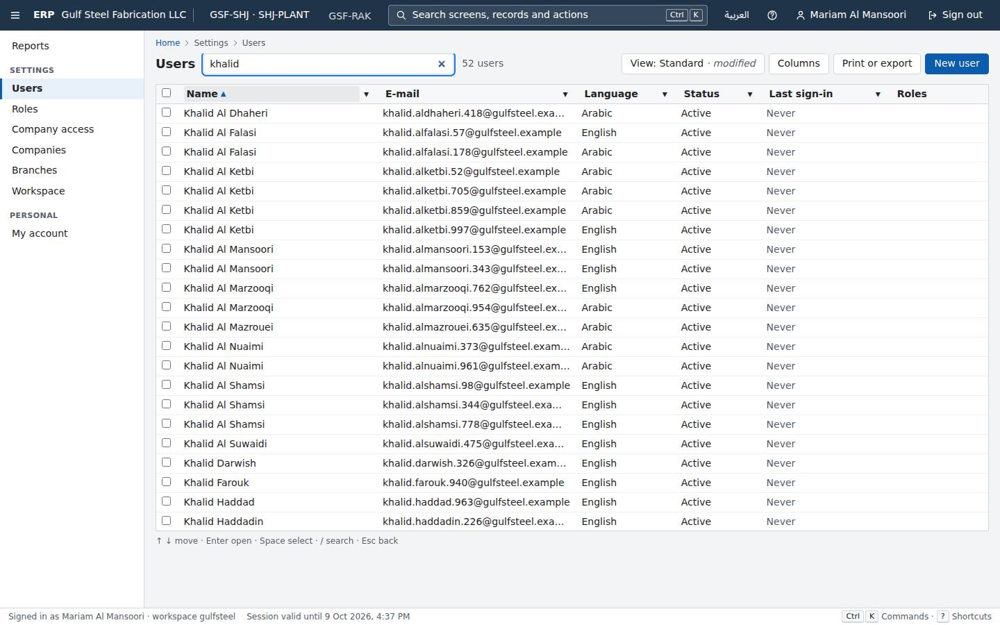

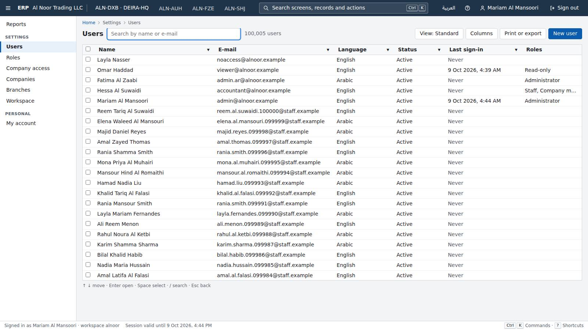

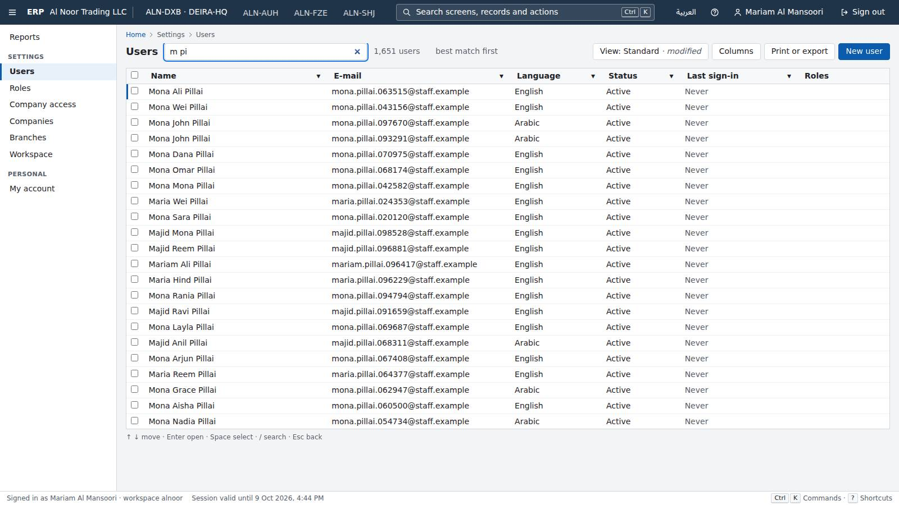

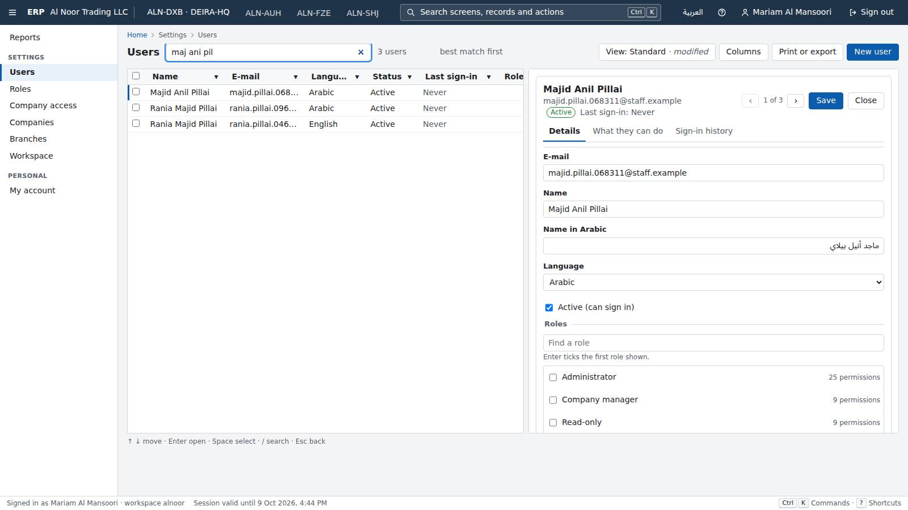

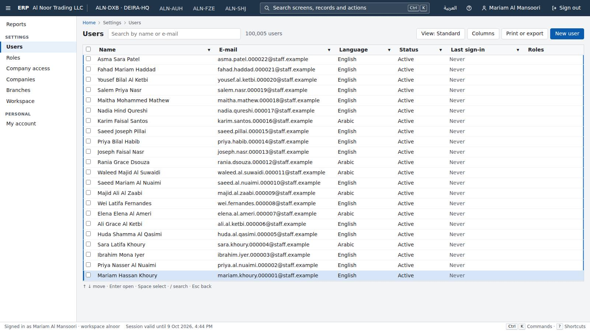

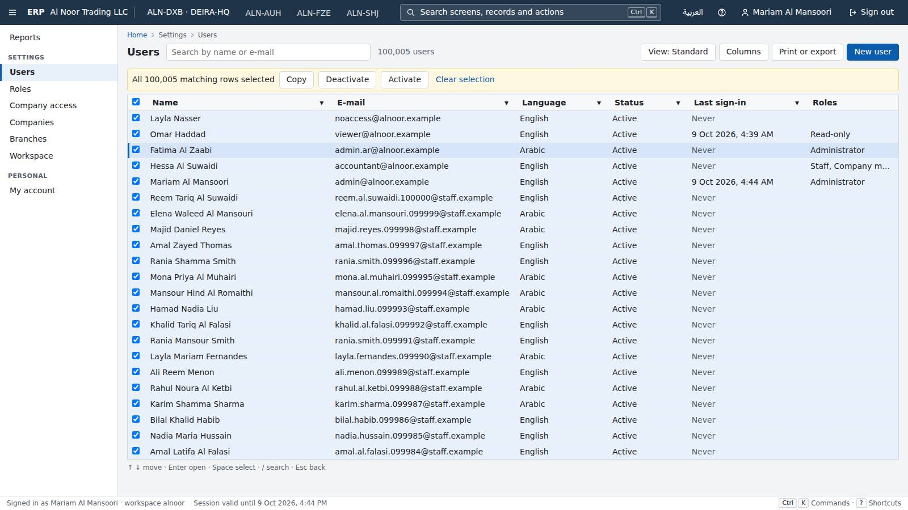

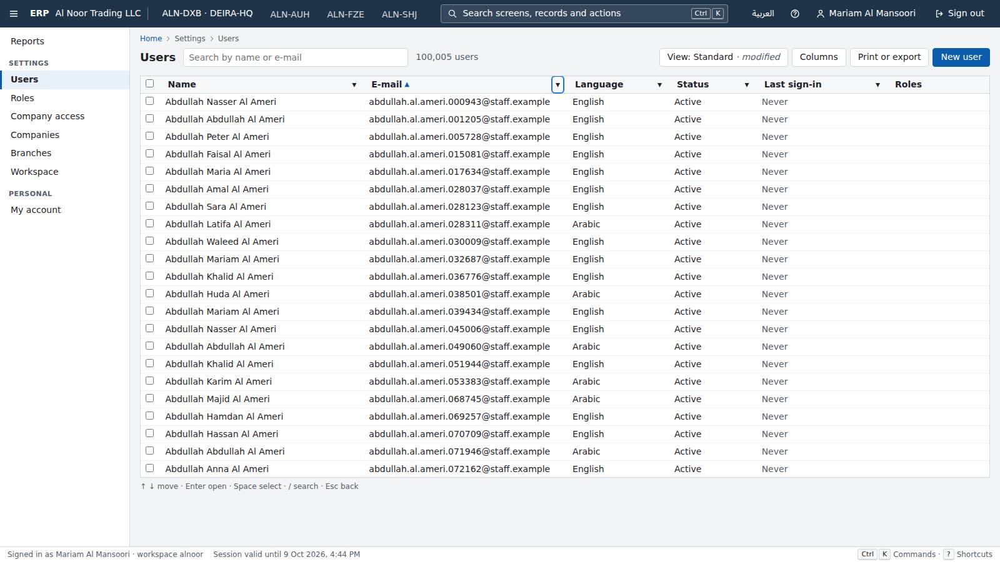

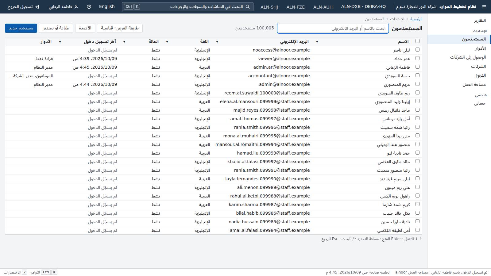
Round 7 · judged 2026-10-09T00:53:00Z · commit f1ce287ac8
Form and report framework
Wave 2 · 4 rounds judgedFor a UAE trading company, prints and exports are how data leaves the system: Excel to the accountant, PDFs to auditors and vendors. This piece owns that surface. The gates now cover every format, language, digit system, disposition and grouping. But the victim in G1's answer-shapes phase prints with at most one free-text parameter (search), and G2ReportData prints each list with only its default and all-columns queries. Code that behaves differently on the other query inputs these routes document (columns, filter, sort, timeZone, search for G2) is never exercised from tenant B, or under a narrower permission set. Two such faults in this piece's own endpoints passed every gate. L6 is a tenant leak: a print spool keyed on download name, columns and format, with no tenant. P9 is a permission fault: a searched list print names role records to a caller who may not read roles. The fix: tenant B, and every permission set in G2ReportData, should print every report and list with a non-default value of every documented query parameter (search, filter, sort, columns subset, timeZone, groupBy) as well as the enumerated shapes. That should run before and during A's attack, with the answers judged as now, and the gate should be plant-tested with L6 and P9. Separately, edit-and-save now ties Odoo at 19 keystrokes, so the piece would be a LOSS even with the gates fixed.
- G1 tenant isolation (product as built) PASS — Gate suites passed inside verify. My own attack on the live demo (tools/attack.mjs, attack-print-surface.txt) covered 85 shapes: every report and list, plain, with all columns, with one column, search, timeZone, numerals=arab, disposition=inline and groupBy, plus reports run with alnoor's and gulfsteel's own company and role ids. alnoor printed first in json/csv/xlsx/pdf × en/ar. gulfsteel then asked for each shape plain, with X-Tenant-Id/X-Tenant, and with X-Company-Id/X-Branch-Id: 2,040 answers (1,896×200, 144×404). None held an alnoor marker in JSON, CSV or unzipped XLSX, and no PDF was byte-identical to alnoor's. Database: erp_owner, erp_app and erp_auth have no superuser and no BYPASSRLS. All 16 tables with tenant_id have RLS enabled and forced. erp_app with no tenant bound sees 0 users.
- G1 catches faults planted in p06's surface FAIL — Plant L6 (plants/plant-L6-print-spool-only.patch, in ReportEndpoints.Output) keeps a printed PDF/CSV/XLSX in a temp-folder print spool for 10 minutes. The spool key is the download name, the chosen columns and the format, with no tenant, and it is used only when the request names `columns`. With L6 applied, the whole gate project (filter Load!=Timing without self-tests) passed every G1 test: G1HttpIsolation (15 min 34 s, answer shapes phase included), G1NonInterference, G1ProcessState, G1TenantSource, G1CompanyIsolation and G1BranchScope (plants/run-A-L6-P6.log; its single failure is P6's G2 test). All 36 G2 tests also passed under L6 alone (plants/run-C-L6.log). The leak is real (plants/plant-L6-live-demo.txt): alnoor's admin GETs /api/reports/lists/identity.users?columns=displayName,email&format=csv&language=en, then gulfsteel's admin sends the same request and receives 2,006 @alnoor.example users and 0 of its own. The roles list Arabic PDF and XLSX with columns=nameEn come back byte-identical. Cause: in the answer-shapes phase the victim sends only enumerated parameters plus a single free-text one (search). Tenant B therefore never prints with `columns` (or timeZone, filter, sort), and a store fed only by those shapes is never filled from B.
- G2 permissions (product as built) PASS — All G2 tests pass inside verify. Live checks: the viewer opens the company form with 20 of 20 controls disabled and no Save button. Ctrl+S, Ctrl+Enter, Alt+Z, Delete and Alt+N sent no write. The catalogue is filtered by permission. A user holding identity.users.read without identity.roles.read gets role counts, not names, in an unsearched users list print, and GET /api/identity/roles answers 403.
- G2 catches faults planted in p06's surface FAIL — Round 3's misses are now caught. P6 (CSV/XLSX ignore withheld columns) is caught by G2ReportData through header and value checks (plants/run-A-L6-P6.log). P8 (list print names records with no permission check) is caught by G2ReportData ('prints Administrator in column roleIds…', plants/run-D-P8.log). New plant P9 (plants/plant-B1-P9-searched-list-names.patch) was MISSED: NamesAsync skips the identity.roles.read check whenever the list print carries `search`, and all 36 G2 tests passed (plants/run-B-P9.log). It is real live (plants/plant-L6-P9-live-demo.txt). A user holding only identity.users.read and reports.catalog.read gets 403 from /api/identity/roles. Yet /api/reports/lists/identity.users?format=csv&search=admin prints Roles = 'Administrator' for both admins, while the same list without search prints counts (1, 0). Cause: G2ReportData prints each list with only two queries (default columns and all columns), never with search, filter, sort or groupBy.
- G3 clean clone PASS — Fresh clone at 41b2af3. `ERP_PROJECT=c-p06-form-report-r4 ERP_HTTP_PORT=20650 ERP_DB_PORT=20651 ERP_VERIFY_HTTP_PORT=20660 ERP_VERIFY_DB_PORT=20661 ERP_VERIFY_LOG=… verify-slot.sh ./erp verify` ran from slot taken at 00:53:35Z to 01:28:30Z (2,095 s; the script reports 2,092 s). It passed 516 .NET, 358 web unit, 79 e2e and 315 compare tests, and the ratchet passed. Processor time was 6,372 s of 10,500 s. `ERP_SEED_USERS_CSV=gauntlet/compare/data/out/users.csv ./erp up` brought up the seeded demo in 60 s (up.log). Port and project overrides worked.
- Rule gates (licence, money, strings, audit, reports) PASS — These pass inside verify. Form saves leave audit.entries rows (202,112 inserts and 10 updates in the demo database). Fonts are OFL-1.1, which the owner approved earlier.
1268 / 1268 passed
0 failed · 0 skipped · 2095s
Clean clone → demo: PASS in 2095s
| Task | Ours | Odoo | Winner |
|---|---|---|---|
| edit-and-save | 3 · 19 · 0.134s · 9.72s | 4 · 19 · 0.209s · 10.28s | odoo |
| arabic-report | 2 · 0 · 0.075s · 5.3s | 6 · 0 · 3.817s · 15.9s | ours |
| print-list-arabic | 3 · 13 · 0.624s · 11.09s | 5 · 32 · 5.669s · 19.06s | ours |


Round 4 · judged 2026-10-09T01:55:59Z · commit 41b2af3485
Audit trail
Wave 2 · 0 rounds judgedWaiting for its first critic.
Multi-currency
Wave 2 · 0 rounds judgedWaiting for its first critic.
Tenant-defined custom fields
Wave 2 · 0 rounds judgedWaiting for its first critic.
Document numbering
Wave 2 · 0 rounds judgedWaiting for its first critic.
Attachments
Wave 2 · 0 rounds judgedWaiting for its first critic.
Background jobs
Wave 2 · 0 rounds judgedWaiting for its first critic.
Approval flows
Wave 3 · 0 rounds judgedWaiting for its first critic.
Import and export
Wave 3 · 0 rounds judgedWaiting for its first critic.
Documented API for everything
Wave 3 · 0 rounds judgedWaiting for its first critic.
Shared Contacts directory
Wave 2 · 0 rounds judgedWaiting for its first critic.